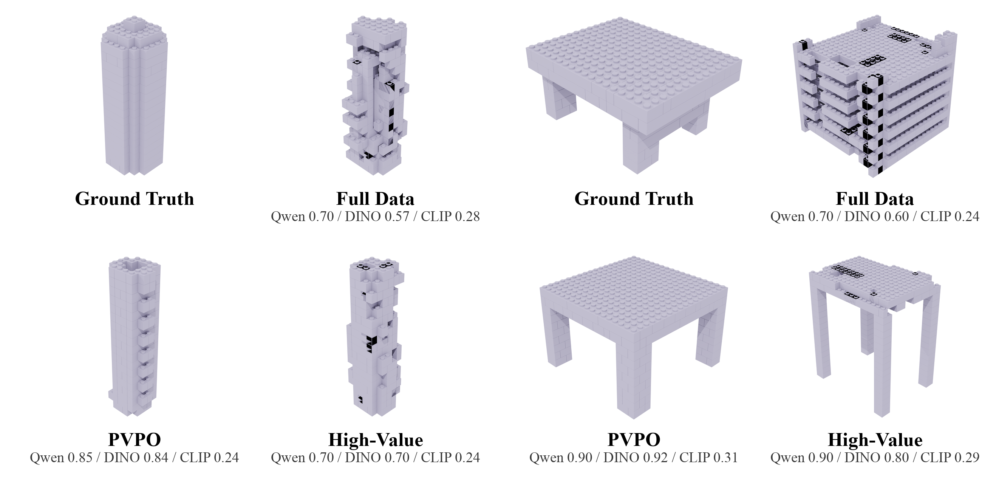
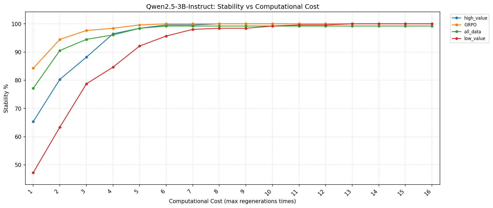

Problem
LEGO Brick Assembly asks a model to produce valid construction programs for compositional 3D objects. Full-scale datasets can contain noisy, redundant, or semantically mismatched trajectories.
Language-guided brick assembly
We study how data quality, geometric rewards, and test-time stability checks improve language-model generation of executable LEGO assembly programs.

Overview
LEGO Brick Assembly asks a model to produce valid construction programs for compositional 3D objects. Full-scale datasets can contain noisy, redundant, or semantically mismatched trajectories.
We identify high-value examples by combining rendered visual alignment with physical validity filters, yielding compact supervision that better targets spatial reasoning.
Physics--Voxel Policy Optimization uses physical validity and voxel-space geometry rewards to improve buildability while preserving object-level structure.
Method
The pipeline first constructs a compact high-value subset for supervised fine-tuning. It then uses reinforcement learning with physical and voxel rewards to align generated programs with both assembly constraints and target geometry. At inference time, rejection sampling and regeneration improve the probability of producing stable structures.
Filter examples using text-render alignment and physical validity.
Reward valid bricks and voxel-space geometric agreement with the reference object.
Use test-time rejection and regeneration to balance stability and compute cost.
Results


Gallery
The main figures below summarize qualitative performance across object categories and multi-case capability evaluations.
Code
The companion release keeps large datasets, checkpoints, generated outputs, and credentials outside version control. The public website is static and can be served directly with GitHub Pages.
python3 -m http.server 8000
# then open http://localhost:8000